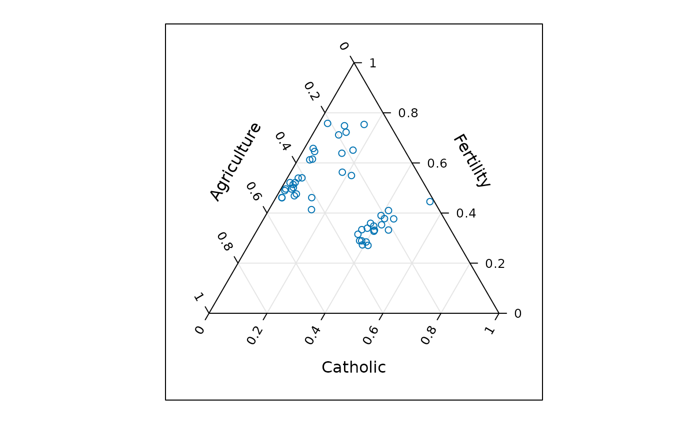
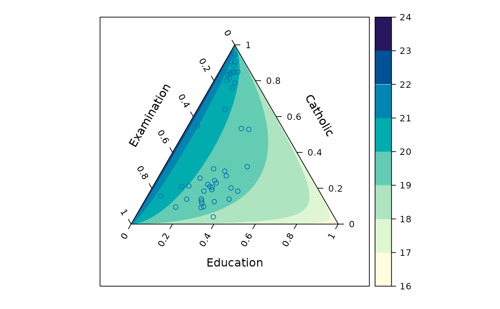
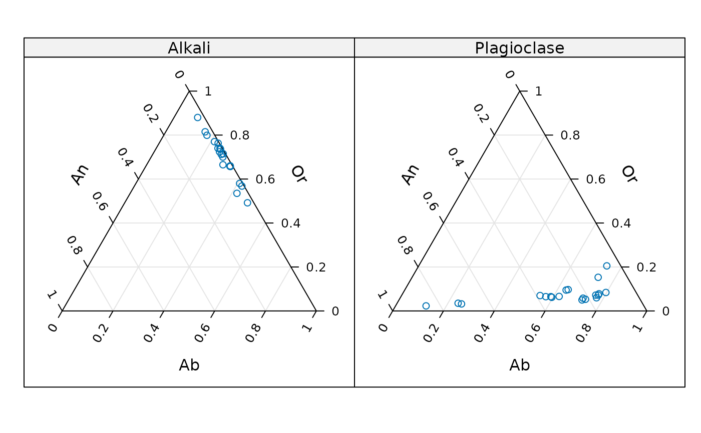
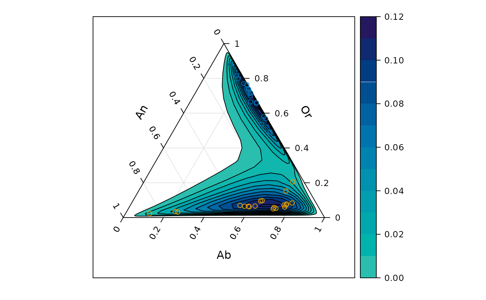

A ternary plot is a triangular diagram that displays proportions of three variables. It can be used to map three-dimensional data to a two-dimensional surface with the caveat that the data's original scales are lost (unless it was proportional data to begin with).#'
Usage
ternaryplot(x, data, ...)
# S3 method for class 'formula'
ternaryplot(
x,
data = NULL,
response = NULL,
groups = NULL,
density = FALSE,
region = density || !is.null(response),
contour = density || !is.null(response),
labels = !is.null(response),
colorkey = region,
xlab,
ylab,
zlab,
xlim = c(-0.15, 1.15),
ylim = c(-0.3, 1),
panel = panel.ternaryplot,
default.prepanel = lattice.getOption("prepanel.default.xyplot"),
drop.unused.levels = lattice.getOption("drop.unused.levels"),
subset = TRUE,
...
)
# S3 method for class 'data.frame'
ternaryplot(x, data = NULL, ...)
# S3 method for class 'matrix'
ternaryplot(x, data = NULL, ...)Arguments
- x
See Methods (by class).
- data
A data frame in which the
formula,groups, and conditioning variables are evaluated.- ...
Arguments that are passed on to other methods, particularly
panel.ternaryplot().- response
An optional response variable
- groups
A variable or expression to be evaluated in
dataand used to distinguish groups by varying graphical parameters.- density
Compute two-dimensional density estimates via
MASS::kde2d().- region
Fill density or response estimates with a color gradient.
- contour
Draw contour lines for density and response estimates.
- labels
Label contour lines.
- colorkey
if
TRUEautomatically computes a colorkey for density or response estimates. Can also be a list (seelattice::levelplot()for details on this).- xlab
X axis label (the left dimension)
- ylab
Y axis label (the right dimension)
- zlab
Z axis label (the top dimension)
- xlim
X limits for the plot region.
- ylim
Y limits for the plot region.
- panel
The panel function.
- default.prepanel
The default prepanel function.
- drop.unused.levels
Drop unused conditioning or groups levels.
- subset
An expression that evaluates to a logical or integer indexing vector. Like groups, it is evaluated in data. Only the resulting rows of data are used for the plot.
Value
An object of class "trellis". The
update method can be used to
update components of the object and the
print method (usually called by
default) will plot it on an appropriate plotting device.
Methods (by class)
ternaryplot(formula): A formula of the formtop ~ left * right. Variables will be evaluated inside data if provided.ternaryplot(data.frame): A data frame for which the first three columns will be mapped to the left, right, and top dimensions of the ternary plot respectively.ternaryplot(matrix): A matrix for which the first three columns will be mapped to the left, right, and top dimensions of the ternary plot respectively.
Examples
ternaryplot(Fertility ~ Agriculture * Catholic, data = swiss)

ternaryplot(Catholic ~ Examination * Education, response = Infant.Mortality,
data = swiss, contour = FALSE)

ternaryplot(Or ~ An * Ab | Feldspar, data = feldspar)

ternaryplot(Or ~ An * Ab, groups = Feldspar, data = feldspar, density = TRUE)
